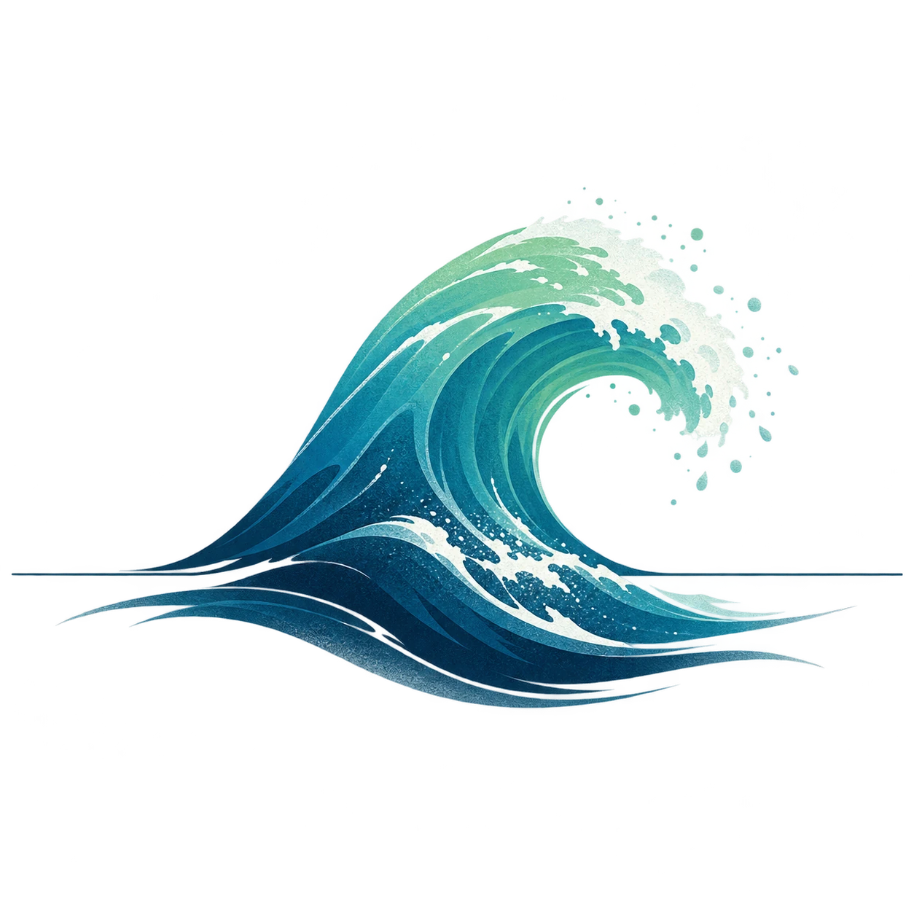

Ride the wave!
A craving is like a wave. It builds up, reaches a peak, and will always subside. Here are some things you can do to ride it out:
- Hold your wrists under cold water: Do this for 15 seconds. The cold shock "resets" your nervous system and interrupts racing thoughts.
- Go for a walk: Fresh air and a change of scenery give your brain something else to focus on.
- Drink water: Try adding electrolytes. Your body often confuses thirst with cravings.
- Delay the decision for 15 minutes: Tell yourself: "I will wait 15 minutes before I decide." The craving is often much weaker afterwards.
- Check HALT: Are you actually Hungry, Angry, Lonely or Tired? Try to meet that need first.
- Find sober communities. There are many ways to connect with sober communities.
- Reflect: What can you focus on right now to help you stay sober for the rest of the day?
Your body thanks you
- Fat burning is put on hold: When you drink alcohol, your body treats it as a toxin that needs to be removed immediately. To do this, it puts other fuel burning, including fat burning, on hold. Because your body wants to get rid of the alcohol as quickly as possible, it converts it to acetate (a type of acid). Your body then has to use this as energy instead of burning the food you have eaten.
- Empty calories: Alcohol contains almost as many calories per gram as pure fat, but gives your body none of the nutrients it needs. These are liquid, "empty" calories that often end up around your waist. Alcohol also lowers your blood sugar, which is why drinking often leads to strong cravings for salty, fatty food — the classic late-night meal.
- And everything else: Hangovers, nausea, hangover anxiety, lost days, the morning after, high blood pressure, impaired thinking and mental wellbeing, reduced impulse control, accidents and cancer...
🎉 Social survival guide
🔙 Back to My page